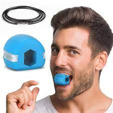

Introduction:
Salut les gars ! Peu importe comment vous vous sentez face à votre apparence, rappelez-vous que la beauté va bien au-delà des traits du visage. C'est votre personnalité, votre confiance et votre gentillesse qui vous rendent vraiment beaux. Alors, ne vous inquiétez pas si vous pensez que votre visage n'est pas parfait, car vous êtes déjà magnifiques à votre manière unique. Explorez ce site de Glow Up pour découvrir des conseils et des astuces pour vous sentir bien dans votre peau et embrasser votre beauté intérieure et extérieure. Vous méritez d'être aimés et appréciés pour qui vous êtes vraiment.L'essentiel, c'est de prendre soin de soi.
Importance de la prière:
La prière a une grande importance pour la beauté intérieure et extérieure également. Lorsque nous prions, nous nous connectons à Dieu et exprimons notre gratitude envers lui. Cela nous aide à être en état de paix et de bonheur, ce qui se reflète sur notre apparence extérieure. La prière aide également à organiser notre vie et à nous orienter vers le bien. Lorsque nous consacrons du temps à la prière, nous laissons de côté les pressions quotidiennes et nous nous concentrons sur les aspects spirituels et moraux. Cette évasion des pressions peut avoir un impact positif sur notre santé mentale et physique, ce qui se traduit par notre beauté extérieure. De plus, la prière renforce la positivité et la paix intérieure, ce qui se reflète dans notre présence et notre interaction avec les autres. Lorsque nous sommes en état de paix intérieure, nous émanons une énergie positive et de l'optimisme, ce qui nous rend plus attractifs et beaux aux yeux des autres. En fin de compte, la prière n'est pas seulement pour la beauté extérieure, mais elle a également un impact sur notre beauté intérieure.
hairmaxxing:
Les cheveux jouent un rôle important dans la beauté de l'être humain. Ils viennent dans toutes sortes de couleurs, de textures et de styles, ce qui nous permet de nous exprimer et de montrer notre individualité. Nos cheveux sont un élément essentiel de notre identité et de notre estime de soi. Alors, prends soin de tes cheveux et laisse-les briller !
Ne pas trop laver les cheveux:
Choisis les bons produits:
N'oublie pas l'hydratation:
Évite les outils chauffants:
Brosse tes cheveux avec précaution :
Protège tes cheveux du soleil :
Coupe régulièrement tes pointes :
Adopte une alimentation équilibrée :
Meilleur style de cheveux homme:
- Lavez et séchez vos cheveux.
- Séparez vos cheveux en sections.
- Enroulez chaque section autour d'un bigoudi ou d'un rouleau, puis fixez-le en place.
- Laissez les bigoudis en place jusqu'à ce que vos cheveux soient complètement secs.
Ne lave jamais trop tes cheveux. Cela peut les priver de leurs huiles naturelles et les rendre secs. Il est important de trouver un équilibre et de laver tes cheveux en fonction de leur type et de leurs besoins. Certaines personnes peuvent avoir besoin de les laver plus fréquemment, tandis que d'autres peuvent espacer davantage les lavages.Je te conseille de laver tes cheveux 2 ou 3 fois par semaine.
Utilise un shampooing et un après-shampooing adaptés à ton type de cheveux. Si tu as les cheveux secs, opte pour des produits hydratants. Si tu as les cheveux gras, privilégie ceux qui contrôlent l'excès de sébum.
Utilise un masque capillaire nourrissant une fois par semaine pour hydrater en profondeur tes cheveux. Tu peux également appliquer une petite quantité d'huile capillaire sur les pointes pour les protéger et les nourrir.
L'utilisation excessive de fers à lisser, de fers à friser et de sèche-cheveux peut endommager tes cheveux. Essaye de limiter leur utilisation et utilise toujours un protecteur thermique avant de les utiliser.
Utilise une brosse à poils doux ou un peigne à dents larges pour démêler tes cheveux en douceur, en commençant par les pointes et en remontant progressivement vers les racines.
Les rayons UV peuvent endommager tes cheveux. Lorsque tu t'exposes au soleil, porte un chapeau ou utilise un spray protecteur solaire spécialement conçu pour les cheveux.
Pour éviter les pointes fourchues et garder tes cheveux en bonne santé, fais régulièrement couper les pointes. Cela favorisera également la croissance de cheveux plus forts.
Une alimentation saine et équilibrée contribue à la santé de tes cheveux. Assure-toi de consommer suffisamment de vitamines et de minéraux essentiels pour favoriser leur croissance.
Les types de cheveux:
Cheveux bouclés:

Cheveux lisses:

Cheveux Frisés:
Cheveux ondulés:

Voici quelques produits qui peuvent aider à améliorer la santé de vos cheveux :
Des huiles végétales bio:
le Minoxidil:
nosemaxxing:
Le nez joue en effet un rôle important dans l'apparence du visage et peut contribuer à la beauté globale. Un nez bien proportionné et harmonieux peut mettre en valeur les autres traits du visage. Il peut aider à équilibrer les proportions et à créer une esthétique agréable. C'est pourquoi certaines personnes cherchent à améliorer la forme de leur nez à travers des techniques comme le nose maxing. En apportant des ajustements subtils, on peut obtenir un résultat qui met en valeur la beauté naturelle du visage
Exercices faciaux :
Massage du nez :
Maquillage :
Accessoires :
Voici quelques idées pour avoir un nez bien :
Il existe des exercices spécifiques qui ciblent les muscles du visage, y compris ceux du nez. Par exemple, tu peux essayer de pincer doucement le bout de ton nez avec tes doigts et de le pousser légèrement vers le haut pendant quelques secondes. Répète cet exercice plusieurs fois par jour.
Masser délicatement ton nez avec tes doigts peut aider à améliorer la circulation sanguine et à stimuler les muscles du nez. Utilise des mouvements circulaires doux pendant quelques minutes chaque jour.
Le maquillage peut être une excellente façon de mettre en valeur les traits du visage, y compris le nez. Par exemple, en utilisant des techniques d'ombrage et de mise en lumière, tu peux créer l'illusion d'un nez plus fin ou plus droit.
Certains accessoires, comme les lunettes ou les boucles d'oreilles, peuvent attirer l'attention sur d'autres parties de ton visage et aider à équilibrer l'apparence globale.
Ces idées peuvent être un bon point de départ, mais il est important de se rappeler que chaque personne est unique et que la beauté est subjective.
Commnet faire si tu as un gros nez:
Si tu as un grand nez,tu dois faire le maxxing pour tout le reste du visage et le corp (hairmaxxing-jawlin-lipsmaxxing...)

skinmaxxing:
Notre peau joue en effet un rôle important dans notre apparence et notre confiance en nous. Une peau saine et bien entretenue peut contribuer à notre beauté naturelle.
Comment rendre sa peau saine et bien:
Nettoie ta peau :
Hydrate ta peau :
Protège-toi du soleil :
Évite de toucher ton visage :
Adopte une alimentation équilibrée :
Hydrate-toi :
Dors suffisamment :
Utilise un nettoyant doux adapté à ton type de peau pour éliminer les impuretés et l'excès de sébum. Nettoie ton visage deux fois par jour, matin et soir.
Après le nettoyage, applique une crème hydratante adaptée à ton type de peau. Cela aidera à maintenir l'hydratation et à prévenir la sécheresse.
Utilise une crème solaire avec un indice de protection adapté à ta peau, même les jours nuageux. Cela protégera ta peau des rayons UV nocifs et préviendra les dommages causés par le soleil.
Nos mains peuvent transporter des bactéries qui peuvent obstruer les pores et causer des imperfections. Essaye de ne pas toucher ton visage autant que possible.
Une alimentation saine et équilibrée, riche en fruits, légumes et antioxydants, peut contribuer à une peau saine.
Bois suffisamment d'eau pour maintenir une bonne hydratation de ta peau de l'intérieur.
Un bon sommeil est essentiel pour la santé de ta peau. Essaye de dormir environ 7 à 8 heures par nuit.
Ice maxxing:
La glace peut aider à réduire les rougeurs et les inflammations de la peau. Elle peut apaiser les irritations et les démangeaisons.
Appliquer de la glace sur le visage peut aider à resserrer les pores dilatés, ce qui donne à la peau une apparence plus lisse.
En utilisant de la glace enveloppée dans un tissu fin, tu peux réduire l'apparence des cernes et dégonfler les poches sous les yeux.
Passer de la glace sur le visage procure une sensation de fraîcheur instantanée, ce qui peut aider à revitaliser et tonifier la peau.
Il est important de noter que l'utilisation de glace seule ne peut pas résoudre tous les problèmes de peau. Il est essentiel d'adopter une routine de soins globale, comme nettoyer et hydrater régulièrement ta peau, ainsi que de maintenir une alimentation équilibrée et une bonne hydratation.
Voici des produits pour avoir une bonne peau:
The ordinary:
Cerave:
La Roche-Posay:
Laneige homme:
C'est une marque de soins de la peau très populaire et réputée pour ses produits abordables et efficaces. Ils se concentrent sur des ingrédients clés et évitent les formulations complexes.The Ordinary propose une large gamme de produits pour différents problèmes de peau, tels que l'acné, les rides, l'hydratation et l'éclat. Certains de leurs produits les plus populaires incluent l'Acide Hyaluronique, la Niacinamide, la Vitamine C et l'Acide Glycolique. Ce qui est génial avec The Ordinary, c'est qu'ils fournissent des informations détaillées sur chaque produit, y compris les ingrédients, les modes d'utilisation et les résultats attendus. Cela t'aidera à choisir les produits qui conviennent le mieux à tes besoins spécifiques. Il est important de noter que chaque peau est différente, donc il est préférable de consulter un professionnel de la peau ou de faire des recherches approfondies avant de commencer une nouvelle routine avec des produits de The Ordinary. Ils peuvent t'aider à déterminer quels produits sont les plus adaptés à ta peau et comment les incorporer dans ta routine existante.

C'est une marque de soins de la peau très appréciée et recommandée par de nombreux dermatologues. Ils proposent une gamme de produits pour différents types de peau et problèmes de peau. Cerave est connu pour ses formules douces et efficaces, qui sont souvent enrichies en céramides et en acide hyaluronique pour hydrater et nourrir la peau en profondeur. Leurs produits sont également non comédogènes, ce qui signifie qu'ils n'obstruent pas les pores et conviennent à de nombreux types de peau, y compris les peaux sensibles. Certains de leurs produits les plus populaires incluent leur nettoyant hydratant, leur lotion hydratante pour le visage et leur crème réparatrice pour les peaux sèches et abîmées. Ils ont également des produits spécifiques pour l'acné, l'eczéma et d'autres problèmes de peau. Ce que j'apprécie chez Cerave, c'est qu'ils mettent l'accent sur des ingrédients simples mais efficaces, et leurs produits sont souvent abordables. Ils sont également soucieux de la santé de la peau à long terme et de la restauration de la barrière cutanée.
La Roche-Posay a une excellente gamme de protections solaires ! Leur produit phare est l'Anthelios, qui offre une protection solaire efficace tout en étant adapté aux peaux sensibles. L'Anthelios est disponible dans différentes formulations, comme les crèmes, les lotions et les sprays, pour convenir à tes préférences. Ils offrent une large protection contre les rayons UVA et UVB, et certains produits sont même résistants à l'eau. Ce que j'apprécie chez La Roche-Posay, c'est qu'ils utilisent des ingrédients doux et respectueux de la peau, tout en offrant une protection solaire efficace. Leurs produits sont également souvent non comédogènes, ce qui signifie qu'ils n'obstruent pas les pores.

C'est la ligne de soins pour hommes de la marque coréenne Laneige. Ils proposent une gamme de produits spécialement conçus pour répondre aux besoins de la peau masculine. La gamme Laneige Homme comprend des nettoyants, des lotions, des hydratants et même des produits de rasage. Leurs produits sont formulés pour aider à hydrater la peau, à réduire les signes de fatigue et à améliorer la texture de la peau. Leurs produits sont également légers et non gras, ce qui est idéal pour une utilisation quotidienne.
bodymaxxing:
Pour prendre soin de notre corps et le maximiser, il y a quelques choses que tu peux faire ! Voici quelques conseils :
Alimentation équilibrée :
Hydratation :
Gestion du stress :
Sommeil adéquat :
"GO TO THE GYM":
Une alimentation équilibrée est vraiment super importante pour notre santé. Ça veut dire qu'on doit manger une variété d'aliments bons pour nous. On peut inclure des fruits frais comme les pommes, les bananes et les oranges. Les légumes verts comme les brocolis, les épinards et les poivrons sont aussi super importants. Et n'oublie pas les protéines maigres comme le poulet, le poisson et les légumineuses. Ils sont super bons pour nos muscles. Et bien sûr, les grains entiers comme le riz brun et les pâtes complètes sont une excellente source d'énergie. Ils nous donnent la force pour la journée ! Alors, essaie de trouver un équilibre entre tous ces aliments délicieux pour que ton corps soit en pleine forme.
Boire suffisamment d'eau est essentiel pour maintenir une bonne hydratation et soutenir le fonctionnement optimal de ton corps.
Le stress peut avoir un impact négatif sur notre santé. Trouve des moyens de gérer ton stress, comme la méditation,la lecture ou toute autre activité qui te détend.
Accorde à ton corps le repos dont il a besoin en veillant à dormir suffisamment chaque nuit. Le sommeil joue un rôle important dans la récupération musculaire et la régénération cellulaire.
L'activité physique aide à tonifier ton corps, à améliorer ta posture et à te sentir bien dans ta peau. le gym peut être un outil puissant pour t'aider à atteindre ton "glow up". Il te permet de travailler sur ton corps, ta confiance en toi et de te connecter avec d'autres personnes partageant les mêmes objectifs.Alors, pourquoi ne pas commencer ton aventure de "glow up" au gym dès maintenant ?

lipsmaxxing:
les lèvres jouent un rôle important car elles peuvent ajouter une touche de glamour et de confiance à ton look. En prenant soin de tes lèvres,tu peux les rendre plus belles et plus attrayantes, ce qui contribue à ton "glow up".

Comment rendre ses lèvres plus belles:
Hydrate tes lèvres :
Exfolie tes lèvres :
Brosse tes lèvres:
Garde tes lèvres bien hydratées en utilisant un baume à lèvres nourrissant. Cela les rendra plus douces et plus lisses.
Utilise un exfoliant doux pour enlever les peaux mortes et lisser la surface de tes lèvres. Cela aidera à les rendre plus douces et plus lumineuses.
Brosser ses lèvres quotidiennement permet de réactiver la circulation sanguine et d'éliminer les cellules mortes. A l'aide d'une brosse à dents, brossez vos lèvres tous les matins pendant 1 à 2 minutes. Vous pourrez déjà sentir immédiatement l'effet de douceur procuré par le massage.
teethmaxxing:
Les dents jouent un rôle essentiel dans ton sourire, et un beau sourire peut vraiment faire ressortir ton "glow up".En prenant soin de tes dents et en les gardant en bonne santé, tu peux obtenir un sourire éclatant qui complète parfaitement ta transformation positive.
Comment avoir des belles dents:
Brosse tes dents régulièrement :
Utilise du fil dentaire :
Adopte une alimentation équilibrée :
Limite ta consommation de tabac :
Assure-toi de te brosser les dents au moins deux fois par jour pendant deux minutes chaque fois. Utilise une brosse à dents souple et un dentifrice fluoré pour éliminer la plaque dentaire et prévenir les caries.
Le fil dentaire est essentiel pour éliminer les résidus alimentaires et la plaque entre tes dents. Passe-le délicatement entre chaque espace dentaire une fois par jour.
Évite les aliments et les boissons qui peuvent tacher tes dents, comme le café, le thé et les sodas. Opte plutôt pour des aliments sains riches en vitamines et minéraux, comme les fruits et les légumes.
Le tabac peut causer des taches sur tes dents et affecter ta santé bucco-dentaire. Essaie de réduire ou d'arrêter de fumer pour préserver la blancheur de tes dents.
Voici des produits pour avoir un sourire parfait:
Dentifrice blanchissant :
Utilise un dentifrice spécialement formulé pour blanchir les dents. Ces dentifrices contiennent souvent des agents de blanchiment doux qui aident à éliminer les taches et à rendre tes dents plus éclatantes.
Bain de bouche antibactérien:
Utilise un bain de bouche antibactérien pour compléter ton rituel d'hygiène bucco-dentaire. Il peut aider à réduire la plaque dentaire, rafraîchir ton haleine et promouvoir une bonne santé bucco-dentaire globale.
Bandes de blanchiment :
Si tu souhaites obtenir des résultats de blanchiment plus visibles, tu peux essayer des bandes de blanchiment dentaire. Elles sont faciles à utiliser et peuvent aider à éclaircir légèrement la couleur de tes dents.
Ces sont quelques exemples populaires, mais il y a beaucoup d'autres marques et produits disponibles sur le marché.
jawlinmaxxing:
La mâchoire peut jouer un rôle important dans le "glow-up" en contribuant à une apparence plus définie et angulaire du visage. Une mâchoire bien définie peut donner une apparence plus structurée et symétrique, ce qui est souvent considéré comme esthétiquement attrayant. En travaillant sur les muscles de la mâchoire grâce à des exercices spécifiques, on peut aider à tonifier cette zone et à améliorer sa définition. Cela peut contribuer à une apparence plus confiante et à une amélioration globale de l'apparence physique.
Comment avoir une machoire bien définie:
Exercices de mâchoire :
Perte de poids :
Posture
Soins de la peau :
Il existe des exercices spécifiques pour renforcer les muscles de la mâchoire. Par exemple, tu peux essayer de mâcher de la gomme régulièrement ou de faire des mouvements de mâchoire en ouvrant et en fermant la bouche.
Parfois, l'excès de poids peut masquer la définition de la mâchoire. Si tu perds du poids de manière saine, cela peut aider à révéler une mâchoire plus définie.
Une bonne posture peut également aider à mettre en valeur la mâchoire. Garde la tête haute et les épaules droites pour donner à ta mâchoire une apparence plus angulaire.
Prends soin de ta peau en nettoyant régulièrement ton visage et en utilisant des produits adaptés à ton type de peau. Une peau saine peut contribuer à une apparence générale plus belle.
mewing:
Le Mewing est une technique qui consiste à adopter une bonne posture de la langue et de la mâchoire pour améliorer l'apparence du visage. Cela implique de maintenir la langue contre le palais, juste derrière les dents supérieures, tout en gardant la mâchoire fermée. Certains prétendent que cela peut aider à renforcer les muscles de la mâchoire, améliorer la posture faciale et favoriser une meilleure respiration.

outfit:
Pour avoir un style trop stylé, tu peux essayer quelques astuces ! D'abord, trouve des vêtements qui te mettent en confiance et qui correspondent à ton style personnel. Expérimente avec différentes couleurs, motifs et accessoires pour créer des tenues uniques. N'oublie pas de te sentir à l'aise dans ce que tu portes, car la confiance en soi est la clé d'un style génial !